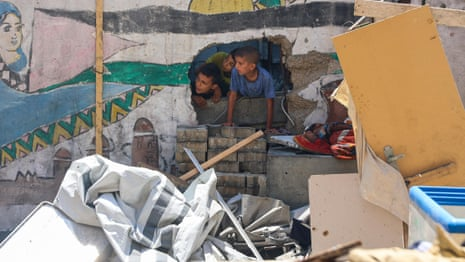

Israel has escalated its offensive in Gaza before imminent talks about a ceasefire, with warships and artillery launching one of the deadliest and most intense bombardments in the devastated Palestinian territory for many months.
Medics and officials in Gaza reported that about 90 people were killed overnight and on Thursday, including many women and children. On Tuesday night and Wednesday the toll was higher, they said. Casualties included Marwan al-Sultan, a cardiologist and director of the Indonesian hospital in northern Gaza, who died in an airstrike that also killed his wife and five children.
In all, about 300 people may have been killed this week and thousands more injured, according to the officials.
Despite the new wave of violence in Gaza, hopes of a ceasefire have risen after Donald Trump’s announcement on Tuesday that Israel had accepted the terms of a potential deal with Hamas. The deal would involve a 60-day initial pause in hostilities, a part withdrawal of Israeli forces from Gaza, and the release of some of the hostages still held by Hamas.
Israel’s security cabinet was scheduled to meet on Thursday night to decide whether to move swiftly towards an agreement with Hamas or order further military escalation.
Benjamin Netanyahu, Israel’s prime minister, is due to fly on Sunday to Washington for talks with Trump and senior US officials. They are expected to discuss a ceasefire, the recent war between Israel and Iran, and possibilities for ambitious regional agreements.
Earlier this week, Gideon Sa’ar, Israel’s foreign minister, described “positive signs” for a ceasefire and the energy minister, Eli Cohen, told the news website Ynet that there was “definitely readiness to advance a deal”.
Hamas is expected to give an initial response to the ceasefire proposals on Friday but the group is split. The political leadership outside Gaza , mainly based in Qatar and Istanbul, favours a ceasefire but those in the territory itself want to continue to fight, sources close to the movement said.
A previous ceasefire between Israel and Hamas collapsed in March when Israel reneged on a promise to move to a second phase of talks.
Since then, almost 6,500 people have been killed in Gaza in successive waves of Israeli airstrikes, shelling and clashes between Israeli troops and remaining Hamas militants.
Though the total blockade of Gaza imposed by Israel has now been partly lifted, only very limited supplies are reaching the most vulnerable in the territory, who are threatened by famine.
The casualties on Thursday included dozens of Palestinians attempting to get humanitarian aid, with five people killed by Israeli fire on their way to sites run by the Gaza Humanitarian Foundation, a new and secretive private organisation supported by the US and Israel that began in May to distribute basic food parcels from four hubs protected by Israeli forces.
About 45 Palestinians seeking aid were killed elsewhere in the territory, reportedly by Israeli fire, Palestinian officials said. Hundreds have been killed in recent weeks while gathered in huge crowds around looted trucks and convoys brought into Gaza by the UN.
Israel’s military acknowledged on Monday that Palestinian civilians had been harmed seeking aid and that its forces had been issued with new instructions after what it called “lessons learned”.
The wave of intense attacks of recent days appears to be designed to put pressure on Hamas in negotiations. Its focus has been the north of Gaza, where the militant Islamist organisation remains entrenched, though much weakened.
In Gaza City on Thursday, 12 people were killed and many injured in a strike on the Mustafa Hafez school, which shelters displaced persons, in al-Rimal neighbourhood, said Mohammad al-Mughayyir, a civil defence official.
Footage filmed by local journalists showed children wandering through the charred, bombed-out shelter as piles of burnt debris smouldered.
Footage shows aftermath of deadly Israeli strike on Gaza school turned shelter – video
Crowds of mourners gathered at al-Shifa hospital, where men and women wept over the bodies of the dead.
“We have no life left. Let them just annihilate us so we can finally rest,” said one woman who lost relatives in the strike and did not give her name.
“There’s nothing left for us. My two daughters are gone – and now my niece along with her six children and her husband were burned to death,” she said.
The Israeli military said it had targeted a key Hamas militant operating in the school, regretted any harm to “uninvolved individuals” and took steps to minimise such harm.
Analysts said Israel’s success in its short war with Iran last month had reinforced the political position of Netanyahu, who is now less reliant on the support of far-right coalition partners who oppose any deal with Hamas. Polls show the Israeli public wants to end the war and bring the remaining hostages home.
Egyptian and Israeli officials briefed on the talks said the new proposal called for Hamas to release 10 of the 50 hostages still held in Gaza – eight on the first day and two on the final day. In return, Israel would withdraw troops from some parts of Gaza, allow a big increase in aid into the territory and release hundreds of Palestinian prisoners held in Israeli jails.
A regional diplomat briefed on the talks said there was now a “big opportunity” to reach an agreement. “The indications we’re getting are people are ready,” he said.
There also appears to be agreement over the delivery of aid in Gaza, with the UN and the Palestinian Red Crescent likely to lead the humanitarian effort but the GHF also continuing to operate. The new deal would lead to Gaza being governed by a group of qualified Palestinians without political affiliations once a ceasefire is reached.
However, big gaps remain. Israel wants the disarmament of Hamas and the exile of its Gaza-based leadership, while Hamas wants a guarantee of a permanent end to hostilities.
The war in Gaza was triggered by an attack into southern Israel in October 2023 during which Hamas-led militants killed 1,219 people, mostly civilians, and abducted 251.
Israel’s retaliatory military campaign has killed at least 57,012 people in Gaza, also mostly civilians, according to a count by the territory’s ministry of health that is considered reliable by the UN and many western governments.